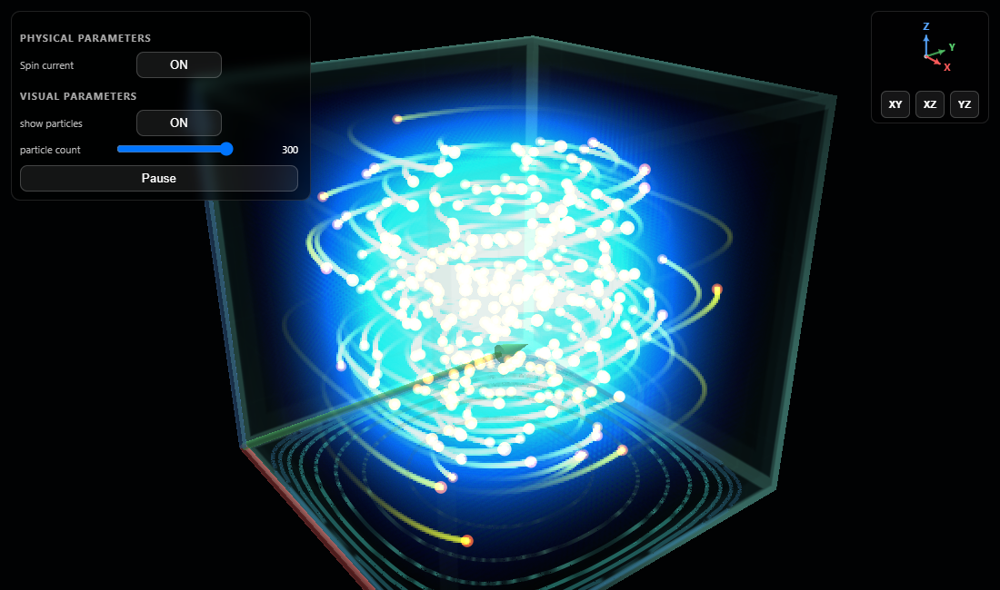

Educational notebook
Eigenstates in 3D Box
Explore the stationary states, the Pauli spin current, and Bohmian motion.

Ground-state
All the energy eigenstates are stationary states, which means their probability density does not change in time. Let us start with the ground state.
The state \(n_x=n_y=n_z=1\) has no interior nodal planes. The phase of the wave functionis spatially constant, and therefore the scalar guidance current vanishes, making bohmian particles seem to stand still. However, if we take the spin into account, there will be an extra spin current in the guidance equation, which can produce nontrivial motion even in the ground state. Switch the spin current on and off in the following demo.
Drag to orbit the box. The XY, XZ, and YZ buttons provide orthographic views.
Excited states and nodes
Higher quantum numbers introduce nodal cells. The phase is still spatially constant within each nodal cell. Therefore the phase dependent guidance current vanishes everywhere, and the Bohmian particles again appear to be at rest. But as before, the density gradients will induce spin current which has the effect of driving the bohmian particles around density level curves. Each particle remains confined to a single nodal cell, as the spin current can only circulate them along the density curves.
Spin current which has the effect of driving the bohmian particles around density level curves.
Magnetic field
We can also apply a uniform magnetic field. The field is indicated by red lines. As is well known, a magnetic field is represented through a vector potential, which enters the kinetic term of the Pauli equation through minimal coupling. The magnetic field also couples directly to the particle’s spin. In Bohmian mechanics, the vector potential contributes an additional term to the particle’s guidance law. Visually it can create a visual precession of the spin orbits.
Field lines indicate the selected uniform magnetic-field direction.
Theory and equations
Box eigenfunctions
For a rectangular box with side lengths \(L_x,L_y,L_z\), separation of variables gives
Each positive integer \(n_i\) fixes the nodal structure along one spatial axis.
Energy and density
An energy eigenstate changes only by a global time-dependent phase, so its density remains stationary.
Pauli evolution
The simulation uses hard-wall boundary conditions and a symmetric-gauge vector potential for the uniform magnetic field.
Bohmian guidance
The first term is the convective current, the second is the spin current, and the last accounts for magnetic coupling in the simulation's units.